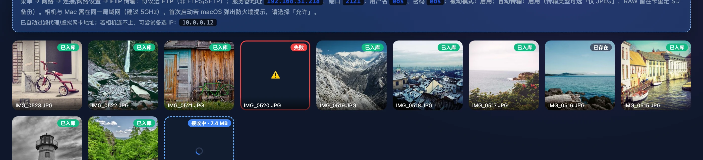

按下快门，照片自己进 NAS
拍摄时让大师拷贝一直开着。相机通过 WiFi 把照片直接传给内置的 FTP 服务器，或者由 EOS Utility 存进文件夹，大师拷贝接手后按日期整理进备份目录，照片流里一张张实时出现。本章写清两种方式怎么设置、照片在哪一步才算收到、断网和重启时会发生什么，以及这套方案的限制。


两种联机方式
点顶栏的 联机拍摄，先在两张模式卡片里选一张。两种方式最后都把照片整理进同一种日期目录，区别只在照片怎么到达 Mac。
- 📶 相机 WiFi 直传卡片副标题写着 R5 Mark II 机身 FTP 直连本软件，无需其他软件。大师拷贝在 Mac 上开一个 FTP 服务器，相机拍完通过局域网把照片推过来。这是默认模式。
- 🔌 监听文件夹副标题写着 配合 EOS Utility 联机拍摄（USB 或 WiFi 均可）。照片先由 EOS Utility 存进它的保存目标文件夹，大师拷贝盯着这个文件夹，把新出现的照片拷进备份目录。
选中的卡片会高亮，并立即存进配置。下次打开应用，还是上次选的模式。
| 对比项 | 📶 相机 WiFi 直传 | 🔌 监听文件夹 |
|---|---|---|
| 需要的软件 | 只要大师拷贝 | EOS Utility 加大师拷贝 |
| 相机怎么连 | 机身的 FTP 传输功能，走 WiFi | EOS Utility 联机，USB 或 WiFi 都行 |
| 什么时候算收到 | 相机发完数据、落盘并提交进收件箱之后 | 文件大小、修改时间和文件身份连续 1.2 秒不变之后 |
| 归档日期 | Mac 收完这张照片的时间 | EOS Utility 写入文件的时间 |
| 来源文件 | 收件箱里的副本确认入库后删除 | 永远保留，需要自己清理 |
| 应用重启之后 | 已完整收到、还没入库的照片，下次会话接着入库 | 只处理新会话开始后出现或改动的文件 |
收哪些文件
联机拍摄接受的格式比存储卡模式多两种：佳能的 HIF 和 Cinema RAW Light 的 CRM。完整列表如下，扩展名不分大小写：
- 照片：JPG、JPEG、PNG、HEIC、HIF，RAW 格式 NEF、CR2、CR3、ARW、DNG。
- 视频：MP4、MOV、AVI、M4V、3GP、MKV、CRM。
大疆的 LRF 和 OSV 不在联机拍摄的列表里。以 . 开头的隐藏文件一律忽略。完整的格式对照见 格式、快捷键与系统要求。
会话设置
模式卡片下面是这次会话要填的内容。每个字段改完立即自动保存，没有单独的保存按钮。WiFi 直传模式显示端口、用户名、密码三个小输入框；监听模式换成监听目录选择器。两种模式都要选备份目标目录。
| 字段 | 默认值 | 说明 |
|---|---|---|
| 端口 | 2121 | 只在 WiFi 直传模式出现。必须是 1 到 65535 的整数，超出范围时开始按钮不可点。清空或填 0，会恢复成 2121。 |
| 用户名 | eos | 相机登录 FTP 用的账号。留空时服务器按 eos 处理，但相机端设置提示会显示空白，建议不要留空。 |
| 密码 | eos | 输入时显示为圆点。留空时同样按 eos 处理。 |
| 监听目录 | 无 | 只在监听模式出现，占位文字是 选择 EOS Utility 的「保存目标文件夹」。 |
| 备份目标目录 | 无 | 占位文字是 接收的照片将按日期（YYYY-MM-DD）整理到这里。WiFi 直传的收件箱也建在这里。 |
目录旁边有两个按钮：选择目录 打开 macOS 原生的文件夹对话框，♥ 加入收藏 把当前备份目标收进收藏夹。
备份目标下面的 收藏夹 一行，复用存储卡模式和大疆模式里收藏过的备份位置。每个收藏以小片显示路径的最后三段，比如 /Volumes/NAS/照片备份/棚拍 显示成 NAS/照片备份/棚拍；鼠标悬停看完整路径，点一下就选中。在联机拍摄里新收藏的位置存进存储卡模式的目标收藏夹，列表最多 8 条，新加的排最前。
开始会话
备份目标选好、端口合法，监听模式下再选好监听目录，开始联机会话 才能点。点下去按钮变成 启动中…，表单暂时锁住。启动成功后配置区收起，换成会话状态条；启动失败时，原因显示在按钮左边，表单解锁，改好再点。
启动失败时
启动错误都以 联机: 开头，后面是具体原因：
| 提示 | 原因 | 怎么办 |
|---|---|---|
| 联机会话已在运行，请先结束当前会话 | 上一个会话还没结束 | 点 结束会话，等收尾完成再开始 |
| 目标目录不存在 | 备份位置找不到，常见于 NAS 没挂载或目录被移走 | 在访达里重新挂载 NAS，或重新选择目录 |
| 请先选择监听目录 监听目录不存在 | 监听模式缺监听目录，或目录已被删除、改名 | 重新选择监听目录 |
| 监听目录与目标目录不能相同或互相包含 | 两个目录是同一个，或者一个在另一个里面 | 把备份目标放到监听目录之外 |
| FTP 端口无法使用 | 端口被别的程序占用，冒号后面附系统给出的原因 | 换一个端口，相机端同步改 |
| 创建收件箱失败 收件箱不能是符号链接 | 备份目标不可写，或者 .mascopy-inbox 的位置被符号链接、普通文件占了 | 检查 NAS 的写权限，移走占位的文件或链接 |
相机端设置
选了 WiFi 直传，配置区和会话中都会显示一块虚线框提示，标题是 📷 相机端设置（R5 Mark II · 只需配置一次并保存为预设）。提示里的服务器地址、端口、用户名、密码都是当前真实值，照着抄进相机就行。下面按顺序写一遍，假设 Mac 的地址是 192.168.31.218。
- 让相机和 Mac 连上同一个局域网。提示里建议用 5GHz 频段，传得更快。
- 在大师拷贝里选好备份目标目录，点 开始联机会话。第一次启动时 macOS 可能弹出防火墙提示，选 允许。
- 在相机上依次进入 菜单 → 网络 → 连接/网络设置 → FTP 传输。
- 协议选 FTP。FTPS 和 SFTP 都不行，大师拷贝只实现了普通 FTP。
- 服务器地址填
192.168.31.218，端口填2121。 - 用户名填
eos，密码填eos。改过的话，以提示里显示的为准。 - 被动模式设为启用。
- 自动传输设为启用。传输类型可以选「仅 JPEG」，RAW 留在存储卡里，收工后用存储卡模式整卡备份。
- 把这套设置存成相机里的预设。只要 Mac 的地址不变，以后开会话、开相机就能直接传。
- 拍一张试试。照片流里出现这张照片，标着 已入库，就说明通了。
为什么建议只传 JPEG：RAW 文件大，走 WiFi 慢，连拍时会在相机里排队。现场挑图、导入 Eagle，JPEG 已经够用。RAW 等收工插卡备份，读卡器比 WiFi 快得多，也不占拍摄时的无线带宽。
本机地址与网卡过滤
相机要知道 Mac 的地址才能连上来。一台 Mac 往往同时有好几个地址：WiFi 一个，网线一个，代理软件、VPN、虚拟机还会各自加几个。大师拷贝打开联机拍摄时读取本机所有 IPv4 地址，先去掉相机肯定连不到的，再把最可能的排到第一位，填进相机端设置提示的服务器地址。
| 过滤掉的 | 范围 | 一般是什么 |
|---|---|---|
| 虚拟网卡 | 名字以 utun tun tap awdl llw bridge vmnet lo gif stf anpi 开头的接口 | 代理和 VPN 的隧道、隔空投送用的直连接口、虚拟机网桥、回环接口等 |
| 链路本地地址 | 169.254.0.0/16 | 没拿到正常地址时系统自己配的地址 |
| 基准测试网段 | 198.18.0.0/15 | 常被代理软件的 TUN 模式占用 |
| 运营商级 NAT 网段 | 100.64.0.0/10 | Tailscale 这类组网工具常用 |
| 回环与未指定 | 127.0.0.1 等 | 只在本机内部有效 |
剩下的地址按三条规则排序：私网地址（10.x、172.16 到 172.31、192.168.x）排在前面；其次是名字以 en 开头的物理网卡，也就是 WiFi 和有线网口；其余按接口名排序。
过滤后还剩不止一个地址时，提示底部多出一行：已自动过滤代理/虚拟网卡地址；若相机连不上，可尝试备选 IP：…，后面列出其他候选。比如 Mac 同时连着 WiFi 和网线，另一个网口的地址就会列在这里。截图里的备选是 10.0.0.12。
- 什么时候检测每次打开联机拍摄时检测一次。换了网络，切到别的模式再切回来，就会重新检测。
- 会话里以状态条为准点开始时大师拷贝会再取一次首选地址，显示在会话状态条上。会话期间，相机端设置提示里的服务器地址也换成这个值。
- 备选地址同样可用FTP 服务器监听本机所有网络接口。首选地址不对时，相机改填备选地址就能连，不用重开会话。
- 一个都没找到会话开始前，提示里显示 （本机局域网 IP）；会话开始后状态条显示
127.0.0.1。这时相机肯定连不上，先检查 Mac 有没有连上局域网。
会话状态条
会话开始后，配置区收起，页面顶部换成一条状态条。左边是会话信息，右边是两个按钮。
- 跳动的绿点旁边写着 联机会话进行中，表示服务器或监听正在后台运行。
- 已接收 N 张统计照片流里 已入库 和 已存在 的卡片，接收中 和 失败 的不算。截图里的 10 张，是 9 张已入库加 1 张已存在。
- FTP 地址只在 WiFi 直传模式显示，格式是
FTP 192.168.31.218:2121 · 用户 eos。相机里要填的就是这几项。 - 清空记录清掉照片流里的所有卡片，计数归零。只清列表，已经入库的文件原样留在备份目录里。照片流为空时按钮不可点。
- 结束会话关掉 FTP 服务器或停止监听，等进行中的写入收尾后回到配置区。收尾的具体顺序见 掉线重试与结束会话。
会话在后台运行，和顶栏当前选的模式无关。拍摄中切到 存储卡导入 或 大疆导入，照片照常入库，照片流照常更新；切回来时状态条和照片流都还在。会话进行中，顶栏 联机拍摄 卡片右上角亮红点，切到导入页也能看到会话没停。
WiFi 直传模式下，相机端设置提示在会话中继续显示在状态条下方，方便现场再给另一台相机配置。结束会话失败时，状态条下方会出现 结束会话失败：… 附原因，会话保持运行，可以再点一次。
照片流
状态条下面是照片流：方形卡片排成网格，最新的在最前面。每张卡片右上角是状态标签，底部压着文件名。

IMG_0520.JPG 入库失败，红框标出，悬停可看原因；IMG_0516.JPG 和备份目录里已有的文件内容相同，记为 已存在；IMG_0512.JPG 正在写进备份目录。| 状态 | 卡片样子 | 含义 |
|---|---|---|
| 接收中 · 7.4 MB | 蓝色虚线框，中间转圈 | 照片已经到了，正在等它写完或正在拷进备份目录。后面的数字是文件大小，1 MB 以下显示 KB。 |
| 已入库 | 缩略图 | 已经写进备份目录的日期文件夹。 |
| 已存在 | 缩略图 | 日期文件夹里已有同名、内容完全相同的文件，这次没有再写一份。 |
| 失败 | 红框，中间 ⚠️ | 这次入库没成功，鼠标悬停显示原因。会话期间会自动重试，成功后变成已入库。 |
两种模式里 接收中 的意思略有不同。监听模式下，文件一出现在监听目录就有卡片，等它写完这段时间一直显示接收中。WiFi 直传模式下，照片在网络上传输的那段时间不会出现在照片流里；卡片在照片完整收到、提交进收件箱之后才出现，这时的接收中表示正在写进备份目录，通常一闪而过，备份目标是较慢的 NAS 时停留久一些。
缩略图与点开
已入库和已存在的照片滚动到视野附近时，才生成 384 像素的缩略图。缩略图从备份目录里的文件生成，用的是 macOS 自带的图像转换，RAW 和 HEIC 也能显示。缩略图还没出来或者生成不了时，卡片中间显示扩展名，比如 CR3。
点一张已入库或已存在的照片，打开灯箱看大图、裁剪、导入 Eagle，打开的是备份目录里的那一份。灯箱的顺序和照片流一致，用 ← → 翻页；拍摄中新入库的照片会实时加进灯箱的张数。在灯箱里导入过 Eagle 的照片，卡片上多一个 ✓ Eagle；裁剪导入过的，多一个 ✂ N，N 是裁剪导入的次数。这两个标记只在内存里，重启后消失。灯箱的全部功能见 Eagle 挑图与裁剪。
视频、接收中和失败的卡片不能点开。监听模式下，文件还没入库就被上游删掉的话，它的卡片会从照片流里消失。
空状态与日志
- 🔌 会话开始前照片流里写着 开始会话后，本次联机拍摄的照片会实时显示在这里。
- 📡 会话中还没收到照片写着 等待相机拍摄…按下快门后照片会自动出现在这里。
- 日志每张照片入库记一条 联机入库: IMG_0523.JPG，失败记 联机入库失败: 文件名 - 原因。同一个文件因为同样的原因反复失败时，只记一次。
FTP 收件箱
WiFi 直传最怕传到一半断掉：信号弱了、相机关机、电池没电。半截文件要是混进图库，事后很难发现。大师拷贝给 FTP 上传设了一个收件箱，照片必须完整收到才提交，提交之后才入库。
收件箱建在备份目标目录里，名叫 .mascopy-inbox，里面分两个区：.mascopy-staging 是暂存区，放正在传的文件；.mascopy-completed 是已提交区，放完整收到、等待入库的文件。三个都是隐藏目录，访达默认看不到，按 ⇧ ⌘ . 可以显示。
一张照片从相机到日期目录
- 相机登录后开始上传。大师拷贝在暂存区里为这次传输新建一个独立目录，名字形如
transfer-进程号-时间戳-序号，文件写在里面。 - 一直读到相机把数据发完。中途断开、会话被结束或者写入出错，这次传输就停在这一步。
- 把文件写进磁盘并执行 fsync，确认数据真正落盘。
- 把整个传输目录原子地移进已提交区。只有走到这一步，这张照片才算收到。
- 立即开始入库：拷进备份目录的日期文件夹。拷贝先写成隐藏的临时文件，写完再以正式文件名发布，发布时目标位置已有文件就换名字，绝不覆盖。
- 入库成功，或者确认日期文件夹里已有内容相同的文件之后，才删除已提交区里的这份副本和它的空目录。
/Volumes/NAS/棚拍/ 备份目标目录 ├─ .mascopy-inbox/ FTP 收件箱，相机看不到里面的两个区 │ ├─ .mascopy-staging/ │ │ └─ transfer-4127-…-7/ │ │ └─ IMG_0524.JPG 传到一半断了，残片原地保留，不入库 │ └─ .mascopy-completed/ │ └─ transfer-4127-…-8/ │ └─ IMG_0525.JPG 已完整收到，正在入库或等待重试 └─ 2026-09-27/ ├─ IMG_0523.JPG 已入库，收件箱副本已删除 └─ IMG_0522.JPG
- 重启后继续入库已提交区里的文件本身就是完成记录。应用中途退出、Mac 重启、NAS 掉线之后，下次用同一个备份目标开始 WiFi 直传会话时，这些照片自动接着入库，不用相机重传。
- 残片原地保留暂存区里的都是没传完的文件。大师拷贝不会把它们入库，也不会自动删除。确认照片还在相机存储卡上，或者已经重传入库之后，可以手动删掉这些目录。
- 旧版收件箱的文件早先的版本直接把文件写在
.mascopy-inbox根目录。升级后这些文件原地保留，同样不会自动入库，需要自己检查处理。 - 各传各的每次上传都有自己的传输目录。两张同名照片同时传来，不会在收件箱里互相覆盖；入库时再按 重名规则 处理。
- 卡住不算完成传输停在半路，不管停多久，都不会被当成传完。大师拷贝只认相机把数据发完这一个信号，不靠一段时间没动静来猜。
FTP 服务器的边界
内置的 FTP 服务器只为相机上传照片而设，能做的事情有明确的范围。
| 项目 | 值 | 说明 |
|---|---|---|
| 协议 | FTP | 明文协议。不支持 FTPS，也不支持 SFTP。 |
| 控制端口 | 2121 | 默认值，在会话设置里可改。 |
| 被动端口 | 50021–50040 | 共 20 个，用于被动模式下的数据传输。 |
| 监听范围 | 本机所有网络接口 | 相机填本机任何一个可达地址都能连上。 |
| 账号 | 一个 | 用户名和密码来自会话设置，留空时按 eos。 |
| 登录后的根目录 | .mascopy-inbox | 只能看到收件箱，碰不到备份目录里的日期文件夹。 |
| 断点续传 | 不支持 | 中断后整张重传。 |
| 同时连接 | 不限 | 每个连接独立处理，两台相机可以同时往里传。 |
| 欢迎语 | mascopy tether | FTP 客户端连上时看到的问候。 |
- 看不见内部目录列目录时，所有以
.mascopy-开头的条目都被隐藏。直接按名字进入、读取或写入这些目录，一律返回权限不足。 - 走不出收件箱路径里的
..最多退回收件箱根目录，再往上就拒绝。路径穿越到备份目录或者系统其他位置的请求都会被拦下。 - 只取文件名相机按自己的文件夹结构上传也可以，服务器允许建目录。入库时只看文件名，一律按日期归档。
- 不在列表里的文件扩展名不在 支持列表 里的文件会照常收下、提交，但不会入库，留在已提交区里。需要的话去收件箱里取。
监听文件夹
用 EOS Utility 联机拍摄时，照片由 EOS Utility 从相机取回，存进它的「保存目标文件夹」。大师拷贝监听这个文件夹，把新照片拷进备份目录。相机和电脑之间用 USB 线还是 WiFi，对大师拷贝没有区别。
- 在 EOS Utility 里确认「保存目标文件夹」的位置。
- 在大师拷贝里选 🔌 监听文件夹，监听目录 选同一个文件夹。
- 备份目标目录 选 NAS 或备份盘。它不能和监听目录相同，也不能一个在另一个里面。
- 点 开始联机会话，然后在 EOS Utility 里正常拍摄。
- 递归监听子文件夹里的新文件也会被发现。EOS Utility 按日期建子文件夹也没关系，入库时一样按大师拷贝的日期规则归档。
- 等文件写完文件的大小、修改时间和文件身份连续 1.2 秒都不变，才开始拷贝。文件身份指磁盘上的 inode，同名文件被整个换掉也能察觉。0 字节的文件不处理。
- 拷贝中还在变就重来拷贝期间源文件又被改写，这次拷贝作废，临时文件删除，重新等 1.2 秒再拷。
- 只管新文件只处理会话开始后新出现或被改动的文件。会话开始前已经在文件夹里的照片不会补拷；需要的话，用存储卡模式扫描这个文件夹。
- 保留文件属性入库的文件保留源文件的权限和修改时间。
- 不跟随外部链接监听目录里指向外部位置的符号链接会被忽略。
- 上游改写后再入库已入库的文件如果又被 EOS Utility 改写，新版本会当作新文件再入库一次，按重名规则改名，比如
IMG_0518_1.CR3。
日期与重名
两种模式最后走同一套入库规则：照片放进 备份目标/YYYY-MM-DD/，只有一层日期文件夹，文件名保持原样。
- 日期取修改时间联机入库不读 EXIF。WiFi 直传模式下，文件的修改时间就是 Mac 收完这张照片的时间；监听模式下，是 EOS Utility 写入文件的时间。日期按 Mac 本机时区换算。
- 同名、内容相同逐字节比较，完全相同就记为 已存在，不再写一份。WiFi 直传模式下，收件箱里的这份副本随后删除。
- 同名、内容不同依次尝试
IMG_0516_1.JPG、IMG_0516_2.JPG……每个候选名都重新判一次，候选名下的文件内容相同，同样记为已存在。 - 从不覆盖联机入库没有覆盖选项，存储卡模式的 覆盖重复文件 开关对这里不起作用。
- 日期文件夹必须是普通目录日期文件夹如果是符号链接，入库失败，提示 日期目录必须是目标目录内的普通目录，不能是符号链接。
/Volumes/NAS/棚拍/ ├─ 2026-09-26/ │ └─ IMG_0498.JPG 23:58 收到，归到 26 日 └─ 2026-09-27/ ├─ IMG_0499.JPG 00:01 收到，归到 27 日 ├─ IMG_0516.JPG 相机重传了同一张，记为已存在，不多写一份 └─ IMG_0516_1.JPG 同名但内容不同，自动改名
同名不同内容，常见于两台相机的文件编号撞在一起，或者相机的文件编号归零之后。
掉线重试与结束会话
NAS 掉线、备份盘满了、目录权限变了，入库都会失败。大师拷贝不会就此放弃这张照片：卡片标成 失败，然后按递增的间隔自动重试。
| 连续失败次数 | 下次重试前等待 |
|---|---|
| 第 1 次 | 0.5 秒 |
| 第 2 次 | 1 秒 |
| 第 3 次 | 2 秒 |
| 第 4 次 | 4 秒 |
| 第 5 次 | 8 秒 |
| 第 6 次及以后 | 16 秒，不再增加 |
重试一直持续到会话结束。备份位置恢复后，下一次重试就会成功，卡片变成 已入库，相机不用重传，你也不用做任何操作。间隔封顶 16 秒，所以恢复之后最多等十几秒。
结束会话
点 结束会话 后，大师拷贝按下面的顺序收尾：
- 停止接受新连接，断开所有已连接的相机。
- 正在传的文件立即中断，残片留在暂存区，不会提交。
- 等已经排进队列的磁盘写入全部完成，释放 FTP 端口和被动端口。
- 正在入库的照片停止拷贝，隐藏的临时文件删除，日期文件夹里不留半成品。WiFi 直传模式下，它在已提交区的副本保留，下次会话继续入库。
- 全部收尾完成后，界面回到配置区。
- 不会抢端口下一次会话要等上一次完全收尾才开始。结束后马上再点开始，也不会出现两个会话抢同一个端口。
- 照片流保留结束会话后照片流里的卡片还在，下次开始会话时计数接着累计。想从零开始，在会话中点 清空记录。
- 监听模式的遗留结束时还没来得及入库的文件留在监听目录里。下次会话只管新文件，不会自动补拷它们。
明文传输与凭据
FTP 是一个很老的协议，账号、密码和照片内容在网络上都不加密。大师拷贝用它，是因为相机机身普遍支持。开会话之前，先了解它意味着什么。
- 明文传输同一网络里的其他设备有条件截获相机和 Mac 之间的流量，看到用户名、密码和照片本身。大师拷贝不支持 FTPS 和 SFTP。
- 密码明文保存端口、用户名、密码和其他设置一起存在
~/Library/Application Support/com.mascopy.mascopy/config.json，密码没有加密。配置文件权限是 0600、所在目录 0700，只有你的 macOS 账户能读。 - 屏幕上的明文密码输入框显示圆点，相机端设置提示里的密码却是明文。
- 默认账号默认用户名和密码都是
eos，谁都猜得到。 - 登录后能做什么知道账号密码的人登录后只能进收件箱，看不到、也读不到备份目录里已经入库的照片。但他可以上传文件，这些文件会像相机的照片一样入库；入库照样从不覆盖已有文件。
几条建议：
- 把默认的
eos/eos换掉，用一个不和其他账户共用的密码，相机端同步改。 - 只在自己信得过的局域网里开会话，别在酒店、展会这类公共 WiFi 上开。
- 拍完就点 结束会话，端口随之关闭。
- 共享屏幕前先切到别的模式，免得相机端设置提示里的密码被看到。
应用整体的写入安全、权限与隐私设计，见 可靠性与隐私。